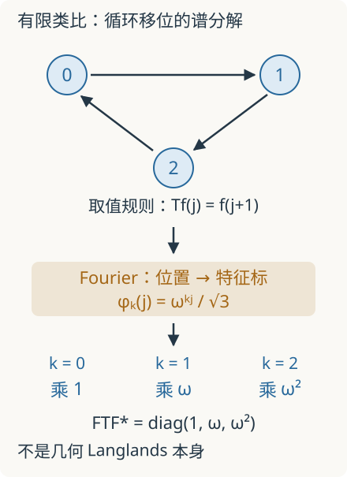

本页目录
数学前沿 III · 几何 Langlands：从特征标走向范畴的谱分解
本讲的可算起点只需复数、矩阵与群表示。读懂正式定理还需要代数曲线、主丛、层、D-模和导出范畴；这些不是可以省掉的技术细节。课程先说明它们各自承担什么任务，再读 2024 年证明系列及后续修订的准确范围。有限 Fourier 实验是入门类比，不是几何 Langlands 定理本身。
一个“对称操作”能否在另一侧变成可读的谱数据？
先修路线：把公式中的每个对象变成能检查的知识
如果第 3 节的范畴等价看起来像一串生词，可以先读第 1 节的有限例子，再按下面的路线返回。目标是逐项获得可操作的能力。表中给出的外部讲义是进阶参考，不能假设第一次阅读就能顺畅通读。
| 阶段 | 为什么需要它 | 完成这一阶段的自测 | 入口 |
|---|---|---|---|
| 1. 环、模与概形 | 几何需要记录函数、局部结构及无穷小信息 | 解释为何两个只有一个普通点的对象仍可能具有不同函数环 | 环与域、模与商、局部化、交换代数、概形 |
| 2. 层与向量丛 | 各坐标片的数据要在重叠处相容地粘合 | 写出三片重叠上的转移矩阵条件；说明局部平凡为何不等于整体平凡 | 覆盖空间、层与粘合的算例、层 |
| 3. 同调代数与导出范畴 | 核、余核和高阶障碍要在同一框架中追踪 | 对一个两项复形计算两级上同调，检查参数变化时是否跳跃 | 同调与边界、链复形的完整计算、同调代数、导出范畴 |
| 4. 联络、局部系统与 D-模 | 几何对象上还要记录微分方程与平行运输 | 计算微分与乘法的交换子，说明微分算子环为何不交换 | 联络、本讲第 2、3 节；进入论文前仍需专门的代数 D-模训练 |
| 5. 模叠、Hecke 对应与相容性 | 参数空间必须保留自同构，对应要作用在整族对象上 | 说明为什么仅把同构对象合成一个点会丢掉自同构；写出 Hecke 特征关系中各项的类型 | 本讲第 2、4 节；作者证明系列作为研究入口 |
新开的椭圆曲线与现代数论线补充算术例子和 Frobenius 的动机。它与上述路线互相启发，但点数计算不会自动建立层、导出范畴或 D-模。理解有限例子、读懂定理陈述、掌握证明，是三个不同的学习目标。
先修检查 A：同一个点集，能保存不同的信息吗？ 比较环 \(\mathbb C\) 与 \(R=\mathbb C[\epsilon]/(\epsilon^2)\)。后者每个元素都可写成 \(a+b\epsilon\)，且 \(\epsilon\ne0\)、\(\epsilon^2=0\)。映到 \(\mathbb C\) 的环同态必须把 \(\epsilon\) 送到零，所以仅看普通复点会漏掉这条无穷小方向。这是进入概形的一个动机；一个双数环算例还没有定义整套概形理论。
先修检查 B：为什么要保留复形，而不只数维数？ 取次数为 0、1 的复形
定义 \(H^0=\ker(a)\)、\(H^1=\operatorname{coker}(a)\)。当 \(a\ne0\) 时乘法是同构，两级上同调都为零；当 \(a=0\) 时两级都是 \(\mathbb C\)。底层两个向量空间始终没有变，变化来自微分。这个例子解释为什么参数族中要保留映射和同调信息；导出范畴还需要准同构等进一步定义。
先修检查 C：D-模为什么带有微分信息？ 在多项式函数上，记 \(x\) 为乘以坐标、\(\partial_x\) 为求导。乘积法则给出
所以两个操作的次序不能交换。描述 D-模时，需要说明微分算子怎样作用，并满足这些代数关系。仅画出一个向量空间，尚未指定这种作用。
这三道检查通过后，回到第 3 节逐项辨认：底空间是什么、对象是什么、态射是什么、支撑条件加在哪里。若仍有一项说不清，就回到相应先修阶段；不必把整张公式强行记成一句口号。
补齐后的前沿入口：一个导出自交究竟多记录什么？
先完成张量积与 Tor。取仿射直线的坐标环 \(A=\mathbb C[x]\) 与原点的环 \(B=A/(x)\cong\mathbb C\)。把原点与自身在直线内相交，普通纤维积的坐标环为 \(B\otimes_A B\cong\mathbb C\)，看起来仍只是一个点。
但 \(B\) 有自由分解 \(0\to A\xrightarrow{\times x}A\to B\to0\)。保留自由项，在上同调次数 \(-1,0\) 上与 \(B\) 张量，得到
微分变为零，是因为 \(x\) 在 \(B\) 中为零。高次信息记录这次自交不横截，普通张量积只保留了零次同调。这里 \(H^{-1}\) 对应上一讲同调次数为 1 的 Tor₁，负号来自两种次数约定，不是出现了“负维度的向量空间”。
若要记录乘法，可用交换微分分次代数 \(\mathbb C[\eta]\) 表示，其中 \(|\eta|=-1,d\eta=0\)；分次交换性在特征零下强迫 \(\eta^2=0\)。它与本页检查 A 的普通双数环不同：双数的幂零元放在次数 0，这里的生成元放在次数 \(-1\)，不能只因都满足平方为零就视为同一个对象。
作为对照，在平面 \(\mathbb C[x,y]\) 内相交 \(x=0\) 与 \(y=0\)。对第一条直线的自由分解与第二条的环 \(\mathbb C[x]\) 张量，得到乘 \(x\) 的单射，故 Tor₁ 为零，普通交点 \(\mathbb C\) 已记录本例的同调信息。两次普通交集都是一点，高次结果却不同。这不是说所有非横截现象都由一个一维 Tor₁ 完全分类。
这是导出纤维积的局部代数算例，不是几何 Langlands 等价的证明，也未构造其模叠或奇异支撑条件。接着完成射影直线的 Čech 上同调，可把“局部到全局”与“保留高次信息”两条计算线接起来。一般导出张量积的定义参见 Stacks Project。
1. 从三格循环开始
把三个位置编号为 \(0,1,2\)，加法按模 3 计算，这就是群 \(\mathbb Z/3\mathbb Z\)。一个复值函数是向量 \(f=(f(0),f(1),f(2))\)。循环移位定义为
在位置坐标中，\(T\) 交换三个数。设 \(\omega=e^{2\pi i/3}=-1/2+i\sqrt3/2\)；因为 \(\omega^3=1\)、\(1+\omega+\omega^2=0\)，三个函数
正交归一。这里 \(\chi_k(j)=\omega^{kj}\) 满足 \(\chi_k(j+\ell)=\chi_k(j)\chi_k(\ell)\)，叫作特征标：它把群的加法变成复数乘法。
直接代入而不是凭图猜测：
同一个循环操作，在特征标坐标中只是乘 \(1,\omega,\omega^2\)。令 Fourier 矩阵 \(F_{kj}=\omega^{-kj}/\sqrt3\)，就得到
“把难直接观察的操作，转成谱侧的简单作用”是本讲保留的直觉。这个三维矩阵等式没有涉及代数曲线、主丛或层，不能冒充后面的定理。

2. 为什么要把函数升级成层与范畴
几何对象会随参数变化，还会有自同构、退化与不同的粘合方式。仅列出一串对象名称，不能记录这些结构。层把局部数据及其限制、粘合规则一起保存；范畴同时记录对象、对象之间的态射和态射的复合。
例如向量丛在曲线每一点放一个向量空间，并规定不同坐标片怎样粘合。\(G=GL_n\) 时，主 \(G\)-丛对应秩 \(n\) 向量丛；一般连通约化群 \(G\) 则允许更一般的对称结构。所有这类丛形成模空间 \(\operatorname{Bun}_G\)；由于丛有自同构，准确对象是模叠，并非一个普通点集。
另一侧的局部系统描述可沿路径平行运输的数据。在复曲线上，它可由平坦联络描述，也与基本群的表示相联系；绕闭路后的变换记录单值化。这里“局部”不表示只研究一个小邻域，而是局部常值的数据怎样在整体上粘合。
几何 Langlands 用对偶群 \(\check G\) 的局部系统作谱参数。\(\check G\) 来自根数据中根与余根的交换，不是随便把矩阵取转置；\(GL_n\) 自对偶只是一个方便例子。
3. 正式对应的两侧是什么
为固定讨论范围，取复数域上的光滑完备曲线 \(X\)，以及连通约化群 \(G\)。de Rham 版本的范畴对应写成
左侧是丛模叠上适当半扭曲的 D-模范畴：D-模由微分算子作用组织，能表达随几何变化的微分方程数据。右侧是对偶群 de Rham 局部系统模叠上、带幂零奇异支撑条件的 ind-coherent 层范畴。\(\operatorname{Nilp}\) 约束的是奇异支撑方向，不是说局部系统的所有矩阵都幂零。GLC I 的正式设定
这些是带导出结构的范畴；完整定义需学习复形、同调和高阶相容性。本讲给出公式的角色图；链复形基础已经提供核、像、拟同构的可算入口，但尚未建立高阶范畴与完整导出理论。等价要求保留态射信息，并使每个对象在同构意义下都有原像；它远强于“两侧对象数相同”。
4. Hecke 操作为什么像“特征值方程”
在曲线一点 \(x\) 修改一个丛，会产生 Hecke 对应；对应诱导对自守侧对象的操作。用对偶群表示 \(V\) 标记相应函子 \(H_{V,x}\)。给定局部系统 \(E\)，其在 \(x\) 的纤维经 \(V\) 得到向量空间 \(V_{E,x}\)。Hecke 特征对象满足示意关系
并且这些同构必须随 \(x\) 变化、对表示的张量积彼此相容。这里的“特征值”已经是几何数据；右侧也不是乘一个普通复数。
有限例中的 \(T\phi_k=\omega^k\phi_k\) 帮助记住操作与谱参数的关系，却没有建立 Hecke 函子与循环移位之间的等同。特别是：找到若干特征对象，还不等于证明整个范畴等价；还要控制它们组成的族、态射和非不可约部分。
5. 2024 年证明系列解决的范围
作者项目将五篇工作合称全局、无分歧、范畴化几何 Langlands的证明。I 构造由自守侧到谱侧的函子，并比较特征零下 de Rham/Betti 等版本；III 检查与抛物诱导相关操作的相容性，证明 Eisenstein 生成子范畴上的等价；V 通过局部系统模叠的几何与重数一结论完成系列。作者项目页
“无分歧”指本设定不在曲线上另设带额外奇异/层级数据的分歧点；“全局”指整条曲线。它没有宣布所有局部、分歧、量子版本一并解决，也没有宣布数域上的整个算术 Langlands 纲领完成。I 中构造函子和 V 中证明等价，是不同阶段，阅读日期不能混成一个孤立新闻标题。
完整静态后备：实验只验证 \(\mathbb Z/3\mathbb Z\) 的 Fourier 对角化。移位方向固定为 \(T_sf(j)=f(j+s)\)；特征向量使用正指数 \(\phi_k(j)=\omega^{kj}/\sqrt3\)，对应特征值为 \(\omega^{ks}\)。先预测移位两次后相位是否平方，再核对：
| \(k\) | \(s=0\) | \(s=1\)（默认） | \(s=2\) |
|---|---|---|---|
| 0 | \(1\) | \(1\) | \(1\) |
| 1 | \(1\) | \(\omega\) | \(\omega^2\) |
| 2 | \(1\) | \(\omega^2\) | \(\omega\) |
额外手算取 \(f=(1,2,0)\)。其 Fourier 系数为 \(Ff=(\sqrt3,-i,i)\)；移位后 \(Tf=(2,0,1)\)，对应
两侧范数平方都为 \(5\)，可作为归一化核对。若改变 Fourier 指数或移位方向，特征值要相应共轭；不能只改图上的箭头。验证这些等式，只验证有限群模型。
6. 两道迁移题
题 1。 令 \(A=T+T^{-1}\)，计算它在三个 \(\phi_k\) 上的特征值。只知道 \(A\) 的特征值，能区分 \(k=1\) 和 \(k=2\) 吗？
独立作答后核对题 1
\(A\phi_k=(\omega^k+\omega^{-k})\phi_k\)，特征值为 \(2,-1,-1\)。后两个方向退化，单个操作的谱不能区分它们；需要更多相容操作。几何理论关心整族 Hecke 操作及其相容性，也不能只拿一个数值不变量代替全部谱数据。
题 2。 范畴 \(\mathcal A\) 只有一个对象、一个恒等态射；\(\mathcal B\) 也只有一个对象，但有两个自同构 \(1,s\)，且 \(s^2=1\)。对象显然能一一配对，范畴是否等价？
独立作答后核对题 2
不等价。等价函子必须在每对对象的态射集合上给出双射，而这里自同态集合分别有 1 个和 2 个元素。丛与局部系统的自同构同样是重要数据；这解释了为什么正式理论需要模叠和范畴，不能降为点集间的名单匹配。
7. 原始论文与阅读边界
以下来源均于 2026-09-08 实际打开核对；本讲准确转述选定系列的结构，不声称完整复核数百页证明，也不声称穷尽最新进展。
- Gaitsgory、Raskin，GLC I：Construction of the functor：首发 2024-05-06，所查修订 2025-09-30；构造函子并比较版本。正文采用其中的 de Rham 设定。
- Campbell 等，GLC III：Compatibility with parabolic induction：首发 2024-09-11；证明与 Eisenstein/常数项操作的相容性及相应子范畴等价。
- Gaitsgory、Raskin，GLC V：The multiplicity one theorem：首发 2024-09-15，所查修订 2026-01-16；系列结篇明确证明所构造函子的等价性。其不可约局部系统的特征对象唯一性带有“可张量一个向量空间”的限定。
- 作者维护的五篇项目目录：将结论限定为范畴化、无分歧的几何 Langlands，并列出各篇职责。
速查：有限类比与正式定理
| 层次 | 对象与作用 | 结论边界 |
|---|---|---|
| \(\mathbb Z/3\mathbb Z\) | \(T_sf(j)=f(j+s)\)，\(T_s\phi_k=\omega^{ks}\phi_k\) | 完整可算的有限 Fourier 模型 |
| Hecke 特征对象 | \(H_{V,x}(\mathcal F_E)\simeq\mathcal F_E\otimes V_{E,x}\) | 需要整族相容性，不只是标量特征值 |
| 几何 Langlands | 丛侧 D-模与局部系统侧带支撑条件的层范畴等价 | 本讲聚焦特征零、全局、无分歧版本 |
2024 年系列及后续修订给出这里讨论的几何结论；整个算术 Langlands 纲领并未因此自动完成。
继续先修训练：Ext 与扩张区分同调类与对象同构；联络与 D-模入口从 C* 水平解与单值化开始。这里的秩一正则奇点模型尚未建立一般 Riemann–Hilbert 对应或 Langlands 所需模叠。